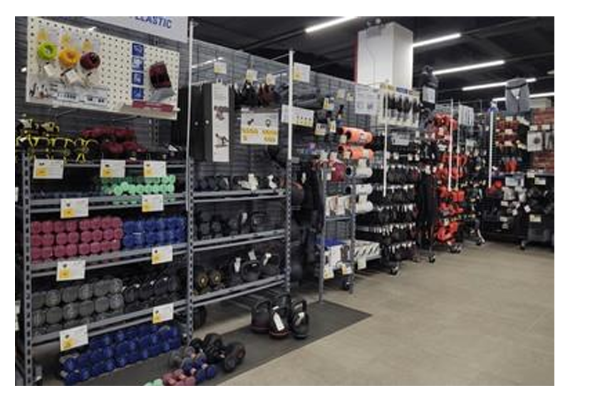

Your Ultimate Bluetooth Remote for Winter Sports, Cycling, and More
Meet Chubby Buttons 2.0, the ultimate Bluetooth remote designed for outdoor enthusiasts who want hands-free control while keeping their gloves on. Whether you’re snowboarding down a slope, cycling through mountain trails, or hiking in the wilderness, Chubby Buttons 2.0 allows you to effortlessly control your music and calls without missing a beat.
Built for Adventure
Chubby Buttons 2.0 is an evolution of its predecessor, featuring a more rugged design and enhanced functionality. Its water-resistant and shockproof construction ensures that it can withstand even the toughest outdoor conditions. The glove-friendly oversized buttons make it ideal for winter sports like skiing and snowboarding, allowing you to operate your device without ever having to remove your gloves.
1. Glove-Friendly Design for Outdoor Enthusiasts
One of the standout features of Chubby Buttons 2.0 is its large, easy-to-press buttons that work flawlessly with thick gloves. This functionality allows users to control their music, adjust the volume, skip tracks, and even answer calls without taking off their gloves—perfect for cold weather activities like skiing, snowboarding, and hiking.
2. Water-Resistant and Shockproof
Built for extreme conditions, Chubby Buttons 2.0 is water-resistant and shockproof. Whether you’re caught in the rain, snow, or a muddy trail, the remote continues to function seamlessly. Its robust build ensures that it can handle drops, impacts, and the unpredictable weather conditions that come with outdoor adventures.
3. Easy Installation and Versatile Attachment
Chubby Buttons 2.0 is simple to set up, with Bluetooth pairing that can be done in seconds. Once connected, the remote can be easily attached to your gear using its adjustable strap. You can attach it to your jacket, backpack, handlebars, or any other gear for quick and easy access when you need it most.
Perfect for Every Outdoor Activity
Chubby Buttons 2.0 is incredibly versatile, making it an essential tool for any outdoor adventure. Cyclists can adjust their music without ever taking their hands off the handlebars, snowboarders can skip tracks while racing down the slopes, and hikers can take calls or change playlists without exposing their hands to the cold.
Real-Life Applications
The versatility of Chubby Buttons 2.0 extends to various outdoor activities. Whether you’re cycling, hiking, skiing, or snowboarding, this remote gives you full control over your devices without compromising your focus or safety. It ensures that you stay in the groove without interrupting your activity.
User Testimonials
"I use my Chubby Buttons 2.0 on long cycling trips, and it’s a lifesaver. I can switch songs and adjust volume without taking my hands off the handlebars, which keeps me safe and lets me stay in the groove." — A Cyclist
"I can’t imagine my winter hikes without Chubby Buttons 2.0. It’s so convenient to change my playlist or answer a call without stopping or exposing my hands to the cold." — A Hiker
"Knowing I can make adjustments to my music without risking a fall or losing my gloves is a game changer. Chubby Buttons 2.0 has become an essential part of my gear." — A Snowboarder
Final Thoughts: Gear Up for Your Next Adventure
Chubby Buttons 2.0 isn’t just an accessory—it’s a game-changing device for anyone who loves outdoor adventures. With its rugged design, glove-friendly functionality, and water-resistant build, it’s the ultimate remote for controlling your devices while on the go. Whether you’re skiing, cycling, or hiking, Chubby Buttons 2.0 keeps you connected and in control. Don’t let your gear hold you back; let Chubby Buttons 2.0 elevate your outdoor experiences.